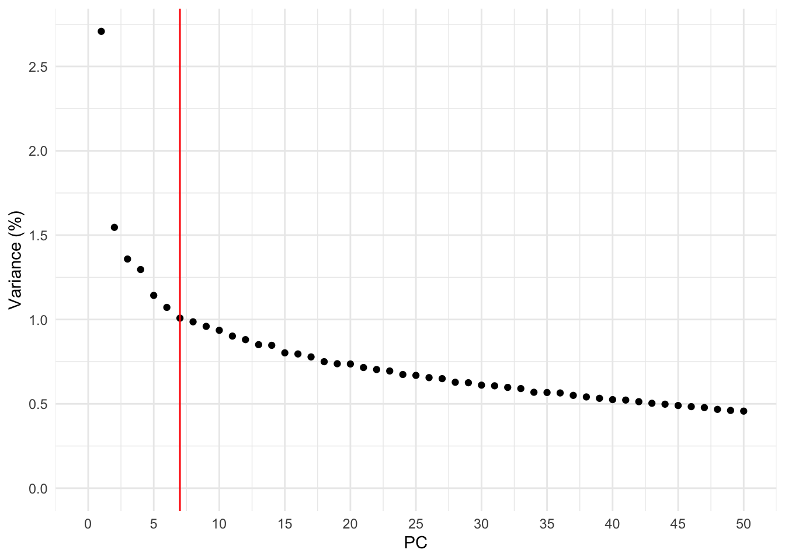
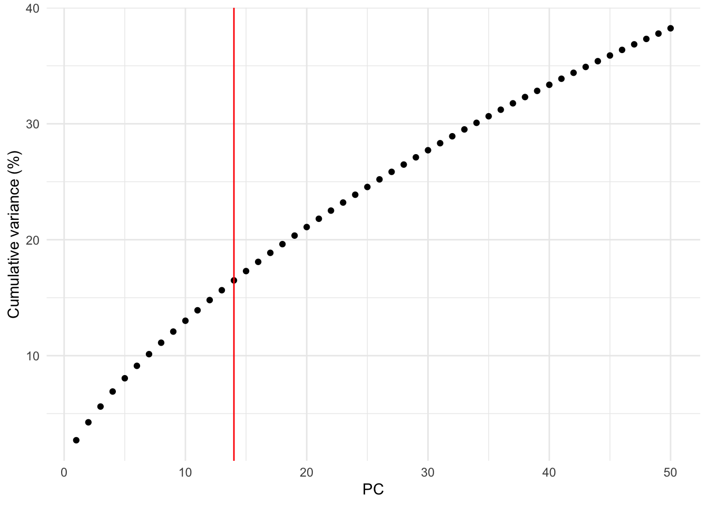
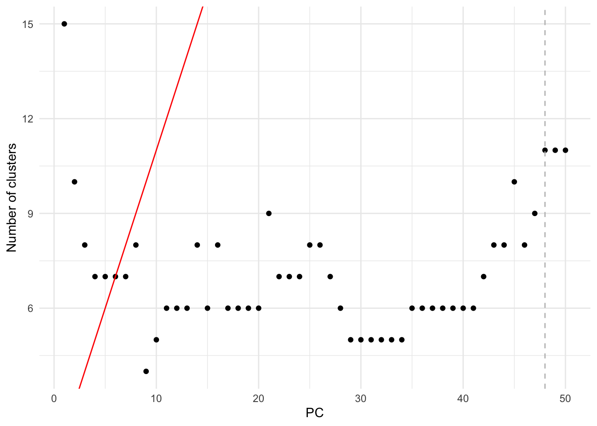
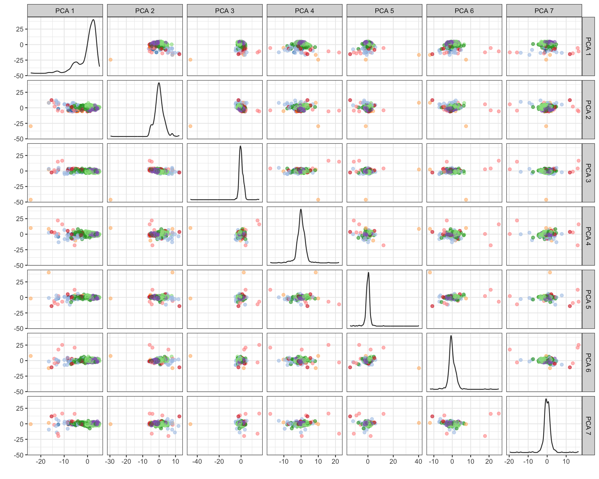
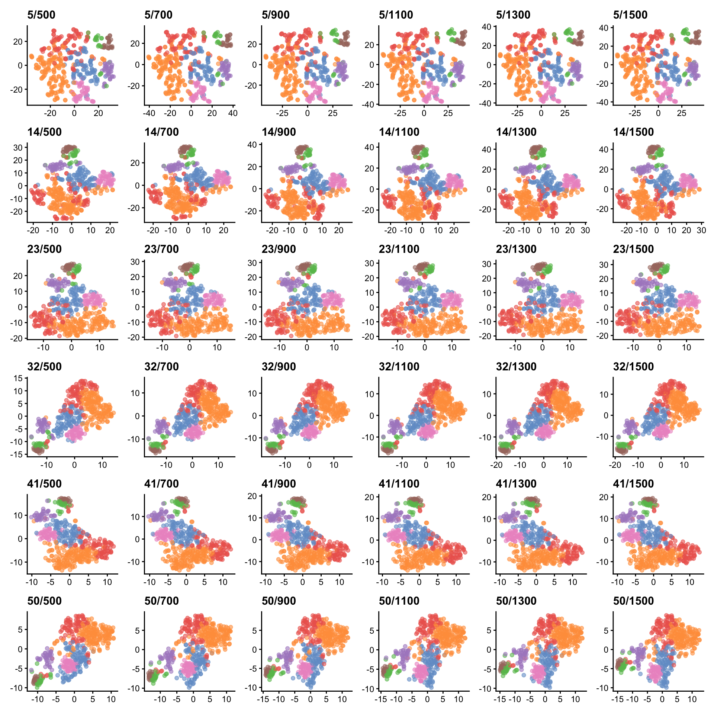
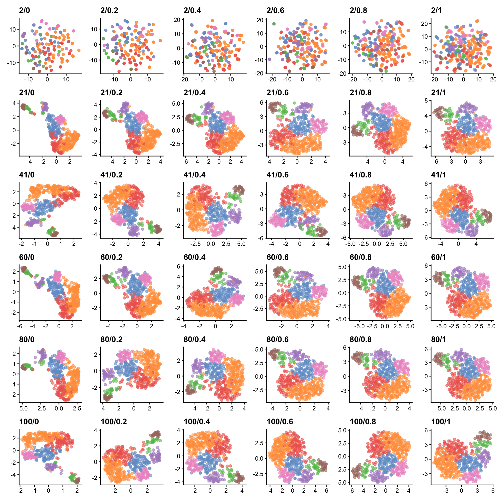
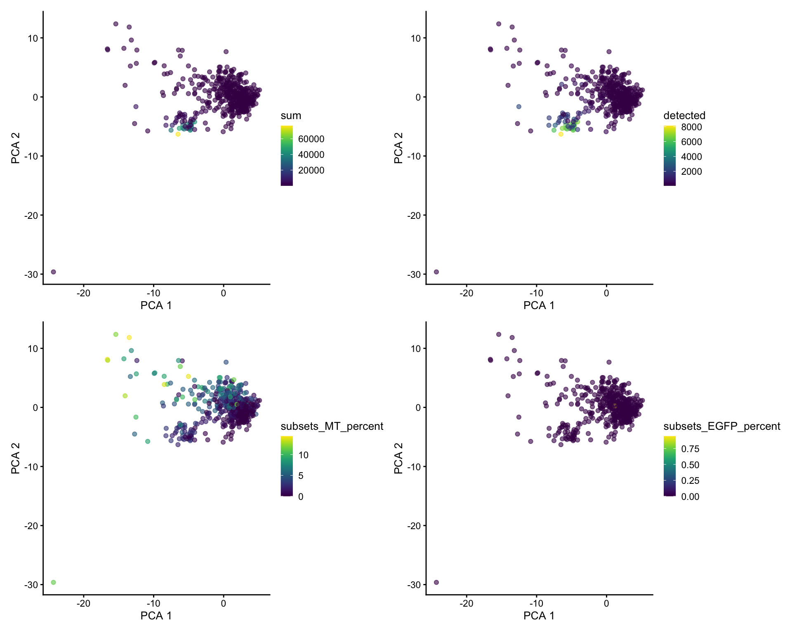
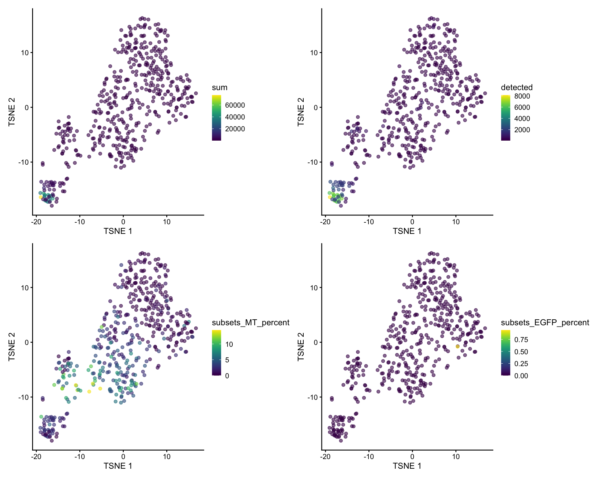
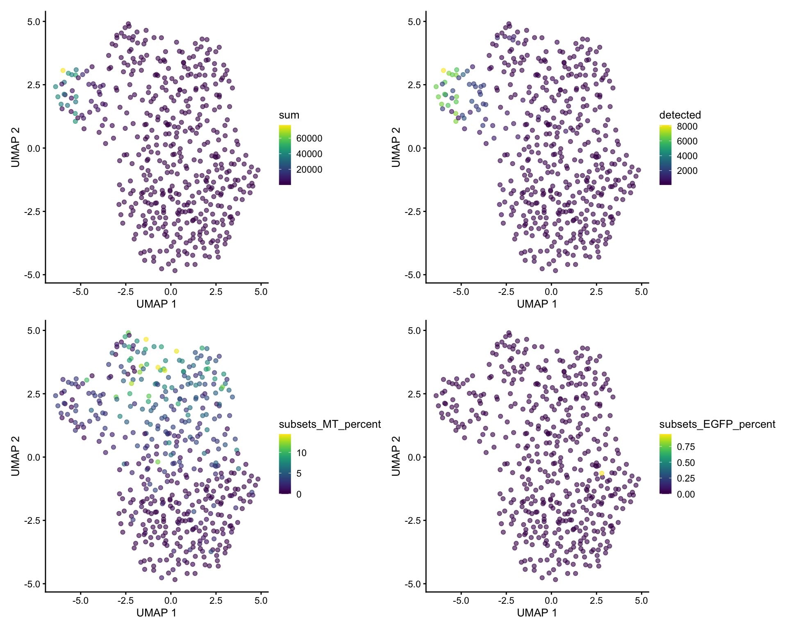

Last updated: 2021-07-30
Checks: 7 0
Knit directory: YS_KDR_HOM_4/
This reproducible R Markdown analysis was created with workflowr (version 1.6.2). The Checks tab describes the reproducibility checks that were applied when the results were created. The Past versions tab lists the development history.
Great! Since the R Markdown file has been committed to the Git repository, you know the exact version of the code that produced these results.
Great job! The global environment was empty. Objects defined in the global environment can affect the analysis in your R Markdown file in unknown ways. For reproduciblity it’s best to always run the code in an empty environment.
The command set.seed(20200510) was run prior to running the code in the R Markdown file. Setting a seed ensures that any results that rely on randomness, e.g. subsampling or permutations, are reproducible.
Great job! Recording the operating system, R version, and package versions is critical for reproducibility.
Nice! There were no cached chunks for this analysis, so you can be confident that you successfully produced the results during this run.
Great job! Using relative paths to the files within your workflowr project makes it easier to run your code on other machines.
Great! You are using Git for version control. Tracking code development and connecting the code version to the results is critical for reproducibility.
The results in this page were generated with repository version 876e5f1. See the Past versions tab to see a history of the changes made to the R Markdown and HTML files.
Note that you need to be careful to ensure that all relevant files for the analysis have been committed to Git prior to generating the results (you can use wflow_publish or wflow_git_commit). workflowr only checks the R Markdown file, but you know if there are other scripts or data files that it depends on. Below is the status of the Git repository when the results were generated:
Ignored files:
Ignored: .Rhistory
Ignored: .Rproj.user/
Ignored: analysis/cache/
Ignored: renv/.gitignore
Ignored: renv/library/
Ignored: renv/local/
Ignored: renv/settings.dcf
Ignored: renv/staging/
Note that any generated files, e.g. HTML, png, CSS, etc., are not included in this status report because it is ok for generated content to have uncommitted changes.
These are the previous versions of the repository in which changes were made to the R Markdown (analysis/04-reduced-dimensions.Rmd) and HTML (docs/04-reduced-dimensions.html) files. If you’ve configured a remote Git repository (see ?wflow_git_remote), click on the hyperlinks in the table below to view the files as they were in that past version.
| File | Version | Author | Date | Message |
|---|---|---|---|---|
| html | e3ad87f | James Ashmore | 2021-07-29 | Build |
| html | e43edb1 | James Ashmore | 2021-07-29 | Build |
| html | f7141a7 | James Ashmore | 2021-07-29 | Build |
| Rmd | 2d497b0 | James Ashmore | 2021-07-29 | Build |
In this document we aim to reduce the number of separate dimensions in the data by performing dimenstionality reduction.
Set chunk options:
knitr::opts_chunk$set(
autodep = TRUE,
cache = TRUE,
cache.path = "cache/04-reduced-dimensions.Rmd/",
dev = "png",
error = FALSE,
message = FALSE,
warning = FALSE
)Load required packages:
library(BiocSingular)
library(patchwork)
library(pheatmap)
library(scater)
library(scran)Read experiment data:
sce <- readRDS("output/03-feature-selection.rds")Perform a principal components analysis (PCA) on the expression data:
set.seed(0011010100)
sce <- runPCA(sce, subset_row = rowData(sce)$selected, BSPARAM = ExactParam())Cluster cells to help examine seperation of clusters by principal components:
snn <- buildSNNGraph(sce, use.dimred = "PCA")
com <- igraph::cluster_walktrap(snn)
sce$cluster <- factor(com$membership)Find the elbow point in the percentage of variance explained by successive PCs:
dim <- reducedDim(sce, "PCA")
var <- attr(dim, "percentVar")
num <- RclusTool::ElbowFinder(seq_along(var), var)Plot the percentage of variance explained by successive PCs:
dat <- data.frame(index = seq_along(var), total = var)
ggplot(dat, aes(index, total)) +
geom_point() +
geom_vline(xintercept = num, colour = "red") +
labs(x = "PC", y = "Variance (%)") +
scale_x_continuous(n.breaks = 10, limits = c(0, NA)) +
scale_y_continuous(n.breaks = 10, limits = c(0, NA)) +
theme_minimal()
| Version | Author | Date |
|---|---|---|
| 047fc76 | James Ashmore | 2021-07-29 |
Retain all PCs until the percentage of total variation explained reaches a given threshold based on the technical noise:
set.seed(1011001011)
dec <- metadata(sce)$modelGeneVarByPoisson
hvg <- rowData(sce)$selected
dim <- reducedDim(denoisePCA(sce, technical = dec, subset.row = hvg, BSPARAM = ExactParam()))
var <- attr(dim, "percentVar")
num <- ncol(dim)Plot the cumulative percentage of variance explained by successive PCs:
dat <- data.frame(index = seq_along(var), total = cumsum(var))
ggplot(dat, aes(index, total)) +
geom_point() +
geom_vline(xintercept = num, colour = "red") +
labs(x = "PC", y = "Cumulative variance (%)") +
theme_minimal()
| Version | Author | Date |
|---|---|---|
| 047fc76 | James Ashmore | 2021-07-29 |
Find the number of subpopulations in the data using clustering:
dim <- reducedDim(sce, "PCA")
fit <- getClusteredPCs(dim, min.rank = 1, max.rank = 50)
num <- metadata(fit)$chosenPlot the percentage of variance explained by successive PCs:
dat <- as.data.frame(fit)
ggplot(dat, aes(n.pcs, n.clusters)) +
geom_point() +
geom_abline(slope = 1, intercept = 1, colour = "red") +
geom_vline(xintercept = num, colour = "grey", linetype = "dashed") +
labs(x = "PC", y = "Number of clusters") +
theme_minimal()
| Version | Author | Date |
|---|---|---|
| 047fc76 | James Ashmore | 2021-07-29 |
Choose number of PCs to retain from the above analyses:
num <- 7
len <- seq_len(num)
dim <- reducedDim(sce, "PCA")
reducedDim(sce, "PCA") <- dim[, len]Plot scatterplot matrix of retained PCs:
plotPCA(sce, colour_by = "cluster", ncomponents = num) + theme(legend.position = "none")
| Version | Author | Date |
|---|---|---|
| 047fc76 | James Ashmore | 2021-07-29 |
Cluster cells to help examine effect of TSNE and UMAP hyper-parameters:
snn <- buildSNNGraph(sce, use.dimred = "PCA")
com <- igraph::cluster_walktrap(snn)
sce$cluster <- factor(com$membership)Perform t-stochastic neighbour embedding (t-SNE) on the PCA data.
Inspect TSNE plots generated by different perplexity and iteration parameters:
lim <- (ncol(sce) - 1) / 3
max <- ifelse(lim < 50, lim, 50)
per <- seq(5, max, length.out = 6)
itr <- seq(500, 1500, length.out = 6)
arg <- expand.grid(
perplexity = floor(per),
max_iter = floor(itr)
)
plt <- apply(arg, 1, function(x) {
set.seed(0011010000)
run <- runTSNE(sce, dimred = "PCA", perplexity = x[1], max_iter = x[2])
txt <- paste(x[1], x[2], sep = "/")
plotTSNE(run, colour_by = "cluster") + ggtitle(txt) +
theme(axis.title = element_blank(), legend.position = "none")
})
wrap_plots(plt, nrow = 6, ncol = 6, byrow = FALSE)
| Version | Author | Date |
|---|---|---|
| 047fc76 | James Ashmore | 2021-07-29 |
Select optimal perplexity value and number of iterations:
set.seed(0011010000)
sce <- runTSNE(sce, dimred = "PCA", perplexity = 32, max_iter = 1500)Perform uniform manifold approximation and projection (UMAP) on the PCA data.
Inspect UMAP plots generated by different neighbors and distance parameters:
max <- ifelse(ncol(sce) < 100, ncol(sce), 100)
num <- seq(2, max, length.out = 6)
dst <- seq(0, 01, length.out = 6)
arg <- expand.grid(
n_neighbors = floor(num),
min_dist = signif(dst, digits = 2)
)
plt <- apply(arg, 1, function(x) {
set.seed(1101010010)
run <- runUMAP(sce, dimred = "PCA", n_neighbors = x[1], min_dist = x[2])
txt <- paste(x[1], x[2], sep = "/")
plotUMAP(run, colour_by = "cluster") + ggtitle(txt) +
theme(axis.title = element_blank(), legend.position = "none")
})
wrap_plots(plt, nrow = 6, ncol = 6, byrow = FALSE)
| Version | Author | Date |
|---|---|---|
| 047fc76 | James Ashmore | 2021-07-29 |
Select optimal number of nearest neighbors:
set.seed(1101010010)
sce <- runUMAP(sce, dimred = "PCA", n_neighbors = 60, min_dist = 0.8)var <- c("sum", "detected", "subsets_MT_percent", "subsets_EGFP_percent")
plt <- lapply(var, function(x) plotPCA(sce, colour_by = x))
patchwork::wrap_plots(plt, ncol = 2)
| Version | Author | Date |
|---|---|---|
| 047fc76 | James Ashmore | 2021-07-29 |
var <- c("sum", "detected", "subsets_MT_percent", "subsets_EGFP_percent")
plt <- lapply(var, function(x) plotTSNE(sce, colour_by = x))
patchwork::wrap_plots(plt, ncol = 2)
| Version | Author | Date |
|---|---|---|
| 047fc76 | James Ashmore | 2021-07-29 |
var <- c("sum", "detected", "subsets_MT_percent", "subsets_EGFP_percent")
plt <- lapply(var, function(x) plotUMAP(sce, colour_by = x))
patchwork::wrap_plots(plt, ncol = 2)
| Version | Author | Date |
|---|---|---|
| 047fc76 | James Ashmore | 2021-07-29 |
Save experiment object to disk:
saveRDS(sce, file = "output/04-reduced-dimensions.rds")Print session information:
sessionInfo()R version 4.0.2 (2020-06-22)
Platform: x86_64-apple-darwin17.0 (64-bit)
Running under: macOS Catalina 10.15.7
Matrix products: default
BLAS: /Library/Frameworks/R.framework/Versions/4.0/Resources/lib/libRblas.dylib
LAPACK: /Library/Frameworks/R.framework/Versions/4.0/Resources/lib/libRlapack.dylib
locale:
[1] en_GB.UTF-8/en_GB.UTF-8/en_GB.UTF-8/C/en_GB.UTF-8/en_GB.UTF-8
attached base packages:
[1] parallel stats4 stats graphics grDevices datasets utils
[8] methods base
other attached packages:
[1] scran_1.18.7 scater_1.18.6
[3] ggplot2_3.3.5 SingleCellExperiment_1.12.0
[5] SummarizedExperiment_1.20.0 Biobase_2.50.0
[7] GenomicRanges_1.42.0 GenomeInfoDb_1.26.7
[9] IRanges_2.24.1 S4Vectors_0.28.1
[11] BiocGenerics_0.36.1 MatrixGenerics_1.2.1
[13] matrixStats_0.59.0 pheatmap_1.0.12
[15] patchwork_1.1.1 BiocSingular_1.6.0
[17] workflowr_1.6.2
loaded via a namespace (and not attached):
[1] corrplot_0.90 plyr_1.8.6
[3] igraph_1.2.6 sp_1.4-5
[5] BiocParallel_1.24.1 tkrplot_0.0-25
[7] digest_0.6.27 htmltools_0.5.1.1
[9] viridis_0.6.1 fansi_0.5.0
[11] magrittr_2.0.1 cluster_2.1.2
[13] limma_3.46.0 tcltk2_1.2-11
[15] jpeg_0.1-8.1 colorspace_2.0-2
[17] ggrepel_0.9.1 xfun_0.24
[19] dplyr_1.0.7 tcltk_4.0.2
[21] crayon_1.4.1 RCurl_1.98-1.3
[23] jsonlite_1.7.2 glue_1.4.2
[25] gtable_0.3.0 zlibbioc_1.36.0
[27] XVector_0.30.0 DelayedArray_0.16.3
[29] scales_1.1.1 DBI_1.1.1
[31] edgeR_3.32.1 Rcpp_1.0.7
[33] viridisLite_0.4.0 dqrng_0.3.0
[35] flashClust_1.01-2 rsvd_1.0.5
[37] proxy_0.4-26 mclust_5.4.7
[39] DT_0.18 htmlwidgets_1.5.3
[41] FNN_1.1.3 RColorBrewer_1.1-2
[43] ellipsis_0.3.2 factoextra_1.0.7
[45] pkgconfig_2.0.3 reshape_0.8.8
[47] farver_2.1.0 scuttle_1.0.4
[49] nnet_7.3-16 sass_0.4.0
[51] uwot_0.1.10 locfit_1.5-9.4
[53] utf8_1.2.1 tidyselect_1.1.1
[55] labeling_0.4.2 rlang_0.4.11
[57] later_1.2.0 munsell_0.5.0
[59] tools_4.0.2 generics_0.1.0
[61] mmand_1.6.1 evaluate_0.14
[63] stringr_1.4.0 yaml_2.2.1
[65] knitr_1.33 fs_1.5.0
[67] purrr_0.3.4 randomForest_4.6-14
[69] sparseMatrixStats_1.2.1 whisker_0.4
[71] leaps_3.1 RclusTool_0.91.3
[73] compiler_4.0.2 beeswarm_0.4.0
[75] png_0.1-7 e1071_1.7-7
[77] tibble_3.1.2 statmod_1.4.36
[79] bslib_0.2.5.1 stringi_1.7.2
[81] highr_0.9 RSpectra_0.16-0
[83] lattice_0.20-44 bluster_1.0.0
[85] Matrix_1.3-4 vctrs_0.3.8
[87] pillar_1.6.1 lifecycle_1.0.0
[89] jquerylib_0.1.4 BiocNeighbors_1.8.2
[91] cowplot_1.1.1 bitops_1.0-7
[93] irlba_2.3.3 httpuv_1.6.1
[95] R6_2.5.0 promises_1.2.0.1
[97] renv_0.13.2 gridExtra_2.3
[99] vipor_0.4.5 codetools_0.2-18
[101] MASS_7.3-54 assertthat_0.2.1
[103] rprojroot_2.0.2 withr_2.4.2
[105] conclust_1.1 GenomeInfoDbData_1.2.4
[107] grid_4.0.2 beachmat_2.6.4
[109] class_7.3-19 rmarkdown_2.9
[111] DelayedMatrixStats_1.12.3 mda_0.5-2
[113] Rtsne_0.15 git2r_0.28.0
[115] scatterplot3d_0.3-41 FactoMineR_2.4
[117] ggbeeswarm_0.6.0